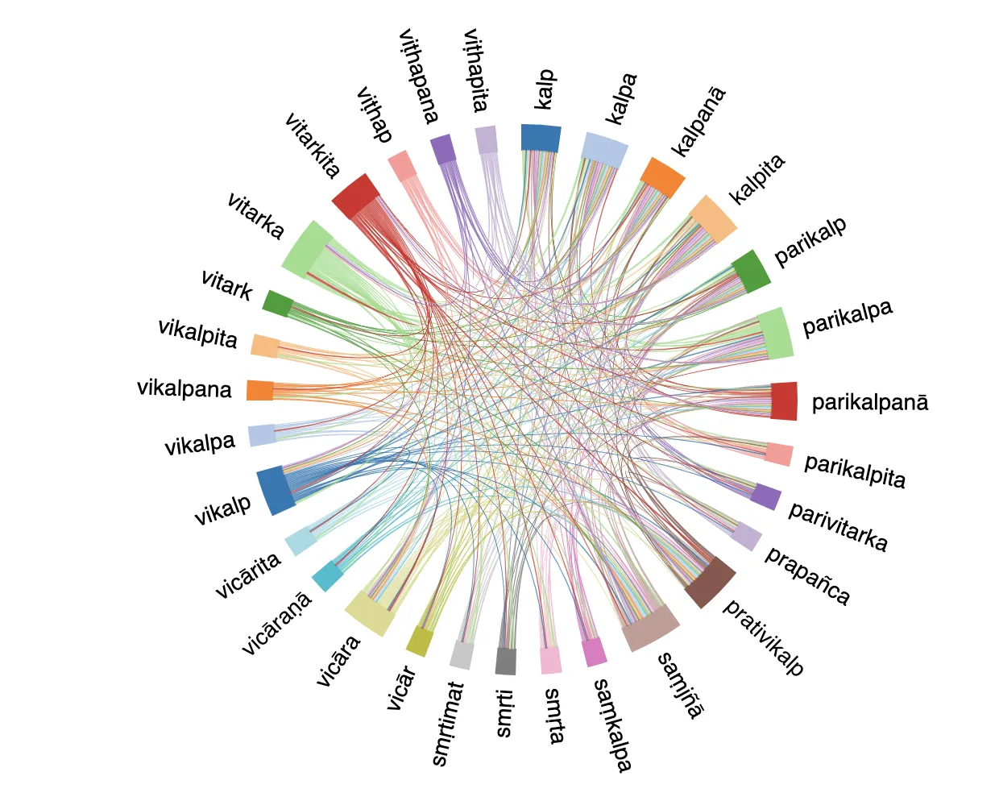

Conceptual Portraits
Part of the Mangalam Dictionary of Buddhist Sanskrit

Preface
Conceptual Portraits is part of the Mangalam Dictionary of Buddhist Sanskrit, an ecosystem of lexical resources for the corpus-driven study of Buddhist Sanskrit, which comprises the manually curated Visual Dictionary of Buddhist Sanskrit, as well as a fully automated corpus-driven resource comparing Buddhist and general Sanskrit, and a word-embeddings based synonym comparison tool. Specifically, the resource introduced here provides a thesaurus counterpart to our Lexical Portraits by describing a given concept through detailed analysis of the words used to express it, i.e. its lexical field.
This resource is curated by Ligeia Lugli, with assistance from Luis Quiñones and is largely written with Claude Sonnet 4. Entries are based on data partly manually curated by Luis Quiñones and partly automatically tagged with Claude Sonnet 4 (see Section 2 for details).
1. structure
Each concept is divided into themes. The words that lexicalize each theme are compared to each other and differences in context, connotation, prototypicality or semantics are highligthed. When sufficient reliable data is available, quantitative analyses are included and differences in distribution over the corpus, e.g. diachronic shifts, are discussed.
For the main themes within each concept we include a fully automated comparison of their lexicalization in other languages. This information is not manually checked and it is only provided to inspire further inquiry into how concepts are articulated in different languages, with a view to contextualize the semantic nuances found in Buddhist Sanskrit literature and develop an intuition as to whether some concepts enjoy an extraordinary level of lexical articulation in this literature or rather their treatment, albeit more nuanced that the one found in languages we may all be familiar with, is in line with other classical languages.
Each concept is accompanied with a documentation section that explains the categorization and tagging used for compiling the portrait and points out any data quality issue (see next section).
2. methodology
Our exploration of conceptual domains relies on the semantic annotation of their lexical fields in our corpus, the Mangalam Corpus of Buddhist Sanskrit Literature. We first identify all the words that express a given concept (the lexical field of that concept) in data we curated for our dictionary. We then retrieve from the corpus all the sentences that instantiate those words and semantically tag the words with AI following the procedure described in Lugli 2025. The accuracy of the AI tagging, evaluated against the manually curated data in our dictionary, varies depending on the word. In most cases it is very good, but for some word-senses formal evaluation yields poor results. In these cases we conduct a qualitative evaluation of the tags. If, upon manual inspection, the tagging mismatch turns out to be an artifact of the wording of the sense-labels and not to compromise the overall semantic categorization needed for the purposes of a conceptual portrait, we include the tags in our quantitative analysis of a concept’s lexicalization. If, on the contrary, it emerges that the mis-tagged sentences would affect our analysis of a concept, we exclude the affected conceptual category from quantitative analysis and only provide a qualitative discussion of it.
The qualitative analysis of each word is based on our lexicographic work and is augmented with human-checked AI analysis. Our curated lexicographic data, although carefully sampled, only covers a small subset of all the instances of a word in the corpus. This is enough to discuss how words are used in the corpus, but it would not be sufficient to enable a comprehensive discussion of the picture of a concept that emerges from those words. Reading through all attestations of all the relevant words in the corpus is not viable. Hence, we use AI. We first use the semantic tags to identify all corpus sentences where a given word express the concept we want to portray. For example for the Language portrait we took all cases where prajñapti means verbal expression and formulation, and we excluded all cases where it means designating something for a specific use, as in the phrase āsana-prajñapti. We then categorize all the selected corpus sentences by theme. So that all cases of words expressing a given aspect of a concept are grouped together. The sentences thus grouped exemplify the use of near synonyms in context. For instance, for the concept of Language we group together the sentences where the lexical field of Language expresses the concept of ‘word’ and thus create a set of sentences featuring near-synonyms that mean ‘word’ (e.g. pada, nāman, etc). We then feed each group of sentences to Claude Sonnet 4 and prompt it to compare the near-synonyms on the basis of the corpus examples. Since the AI’s output tends to degrade with large number of tokens, we further divide the sentences in small batches, through stratified random sampling by word, and process them one by one. Finally, we feed the output of each batch back to Sonnet 4 and prompt it to provide a unified summary of all the batches. This output is then manually revised and incorporated in our portrait.
3. limitations
Our entries paint the portrait of a concept that emerges from our corpus. While our corpus is comprehensive, it only contains works that are extant in Sanskrit and whose editions have been digitized. This is but a small fraction of Buddhist literature. Hence, the information contained in this resource should be taken as a point of departure for further research and care should be exercised in generalizing it.
Data-visualizations are provided for convenience. They should be used with care as the categories they display (e.g. periodization or semantic categorization) contain an element of arbitrariness.